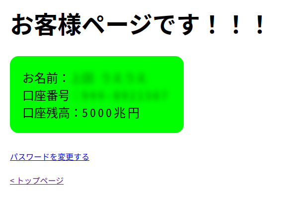

OSINT blurred-secret
注意事項です！
この問題を解く際、身体的疲労を伴う可能性があります...！十分な休息とともにでお願いしますどうか......！！
flagのハッシュ関連！です！
flagのハッシュ関連！をのせさせせいささします！（載せさせていただきます！）（デベロッパーツールとかでも見れます！）
ハッシュ値：389e2f9d2d31b848f176cd9190e033021ef69ed8aeef51d217098d32e14889cb
ハッシュ関数：SHA-256
ストレッチング回数：500
問題文
------------------------------------------------------------------------------------------------------------------------------
ｳﾁの残高、5000兆円あってｳｹんだｹﾄﾞ😂

------------------------------------------------------------------------------------------------------------------------------
↑
うらやましすぎなので、銀行口座を乗っ取りましょう。すみません、ログインまでやっていただく必要はありません。すみません。
この銀行みたいです。口座作ったとこ。
うらやましすぎなので、どうせパスワードはpasswordです。ワンタイムパスワードも無いに違いありません。間違いないです。
口座番号がわかりません。すみません。この世界に店番号とかありません。口座番号がわかったら↓の提出欄から共有してください。お願いします。
提出欄
フォーマットは UCTF{口座番号} です。口座番号は長さが3と7の半角数字列を半角ハイフンで繋げたものです！
例：UCTF{012-3456789}
ストレッチングを行うため、提出から判定まで時間がかかるかもです...！ ごめんなさい！！！
flagのハッシュ関連へのリンク＿＿＿ ←見えにくいアンダーバーがある（ここに！）
special thanks：みど